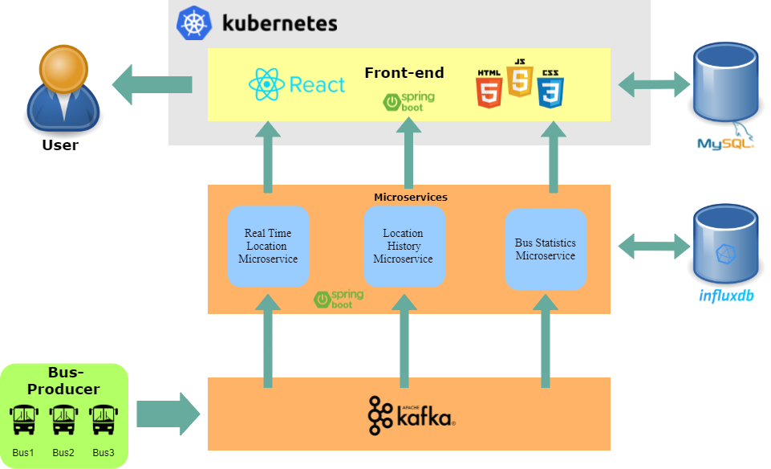
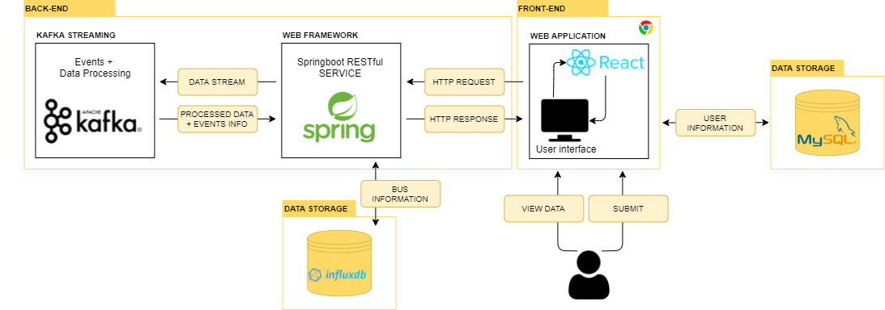

.png)
Arquitetura
Arquitetura do sistema
Após o processo de levantamento de requisitos e da escolha de uma arquitetura adequada aos mesmos, foi preciso escolher quais as ferramentas que melhor se adequam ao desenvolvimento do sistema. Assim, a nível de back-end implementou-se o sistema com recurso à plataforma Spring Boot, uma vez que permite criar a base do projeto de forma rápida e eficiente. Relativamente ao front-end, dado que um dos requisitos dos sistema passa por uma rápida atualização das componentes visuais do website, optou-se pelo ReactJS, pois permite atualizar componentes individualmente, de forma rápida, eficiente, sem serem necessários muitos recursos.
Como referido anteriormente, o sistema foi desenvolvido através do uso da plataforma Spring Boot. No entanto, também foram usadas diversas outras ferramentas, como o Docker, Docker Registry e Jenkins, que auxiliam o processo de automatização e atualização do sistema e a plataforma Kafka, que permite que os diversos componentes do sistema comuniquem entre si de forma rápida. Para além das ferramentas acima enumeradas, existem ainda aquelas cujo uso, apesar de não estar relacionado com o runtime, são também de extrema importância. Destacam-se assim, por exemplo, o Logback, Logstash, Elasticsearch e Kibana, uma vez que o seu uso permite uma melhor gestão dos logs, facilitando o processo de verificação e validação do estado do sistema. De seguida apresentam-se as portas que se encontram associadas a algumas das ferramentas anteriormente enumeradas, bem como as portas associadas a alguns dos microsserviços que compõem o sistema.
Para além das ferramentas acima enumeradas, existem ainda aquelas cujo uso, apesar de não estar relacionado com o runtime, são importantes, como por exemplo o Logback, Logstash, Elasticsearch e Kibana, uma vez que o seu uso permite uma melhor gestão dos logs, facilitando o processo de verificação e validação do estado do sistema.
O sistema desenvolvido tem a si associado um sistema subdividido em microsserviços, o que vai ao encontro do modelo Event Driven. Relativamente às tecnologias usadas, todos os microsserviços têm por base a plataforma Springboot, o que facilita a conjugação de todos os componentes de cada um dos sistemas.
Os dados originais serão extraídos do documento “Bus Information” facultado pelo professor e disponibilizados para o nosso sistema através de uma API REST após um processamento prévio. A informação é persistida numa base de dados InfluxDB, com a informação considerada mais relevante. Em termos de processamento da informação, este será realizado com recurso ao kafka, o qual está regularmente a produzir/consumir informação de campos como a velocidade ou as coordenadas, para calcular as rotas dos autocarros e o tempo estimado de chegada.
Bus-Producer
Os dados recolhidos são enviados através de um script escrito em Python que desempenho o papel de um producer de Kafka, enviando os dados para um tópico de Kafka.
Back-end
A aplicação Spring boot é responsável pela interligação de todos os componentes. Esta, possui um consumer e um producer de Kafka, que recebe os dados no tópico para o qual o script em Python está a enviar. Estes mesmos dados são processados e, quando detetado um autocarro novo são enviados pelo producer para o outro tópico de Kafka.
Database MySQL
A base de dados MySQL é usada para armazenar a informação sobre os utilizadores. Esta base de dados está ligada à aplicação front-end para permitir fazer o registo, login de utilizadores, entre outras funcionalidades relativas aos utilizadores.
Database InfluxDB
A base de dados InflluxBD é usada para armazenar a informação sobre os autocarros. Esta base de dados está ligada à aplicação back-end para permitir utilizar a informação dos autocarros, por exemplo, para estatísticas.
Front-end
O front-end é uma aplicação React, responsável por apresentar a informação dos autocarros, recebida e processada, para uso por parte dos utilizadores, tendo uma interação back-end <-> Utilizador. Esta aplicação apresenta uma secção para a visualização dos autocarros em tempo real, outra secção para selecionar um autocarro e ver toda a informação relativa ao mesmo, outra secção para ver o histórico dos autocarros e uma secção para informação relativa aos utilizadores.
Modelo Tecnológico
Relativamente às tecnologias usadas, todos os microsserviços têm por base a plataforma Springboot, o que facilita a conjugação de todos os componentes de cada um dos sistemas. O microsserviço DatabaseConnector, para além de Springboot, faz ainda uso do MySQL, para permitir persistência, e da tecnologia Kafka para poder enviar dados para diversos tópicos que serão consumidos noutros serviços. Relativamente aos microsserviços RealtimeProcessing e StatisticsProcessing, ambos consomem os dados que vêm nos tópicos de kafka e fazem o seu processamento através de KafkaStreams. Por último, a plataforma Planejane-gui tem por base a tecnologia ReactJS que está a ser disponibilizada num servidor nginx. O diagrama de tecnologias pode ser verificado abaixo. O deployment de todo o sistema tem por base a plataforma docker que permite a criação de imagens e de containers que correm essas imagens. Assim, para cada um dos componentes foi criado um Dockerfile que permite a criação da sua respetiva imagem que pode depois ser utilizada em containers. Para os componentes que usam Springboot o dockerfile basicamente copia o jar da pasta target e coloca-o a correr. Para o componente do frontend, o dockerfile cria uma imagem intermédia usando o node que permite obter uma imagem muito mais pequena através que é possível correr através do nginx. É possível obter mais informação acerca do deployment do sistema na parte de Manual, Developer ou Operations da documentação.
